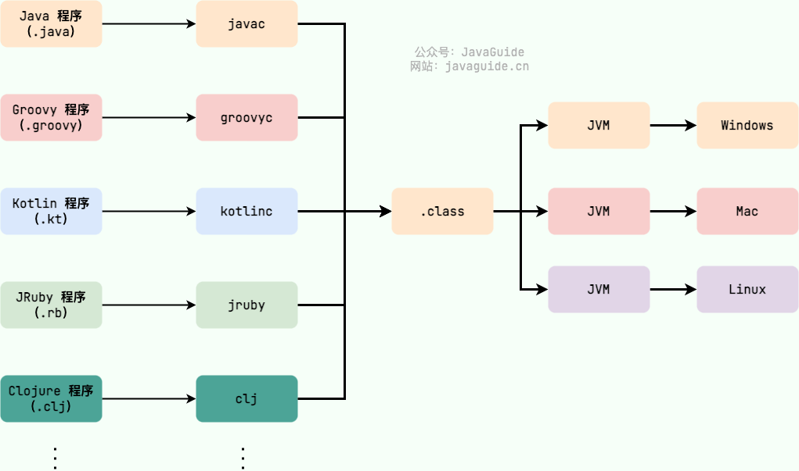
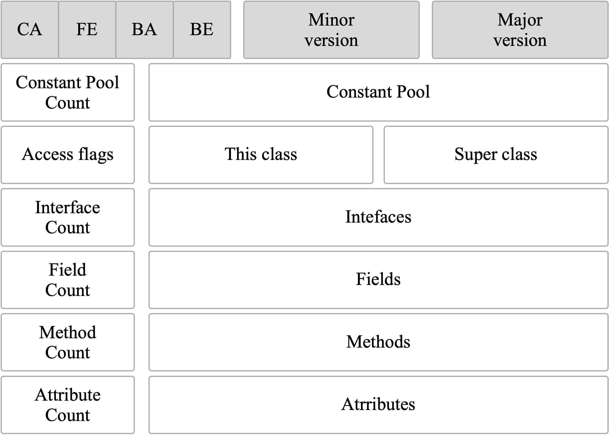
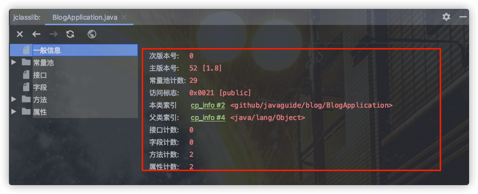
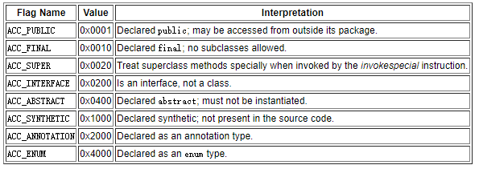
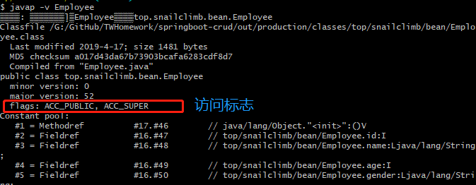
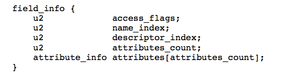
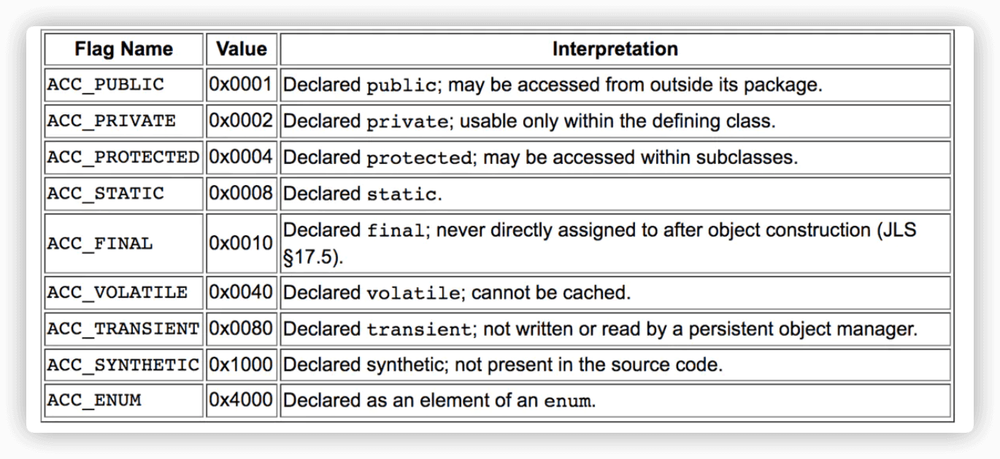
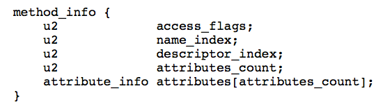
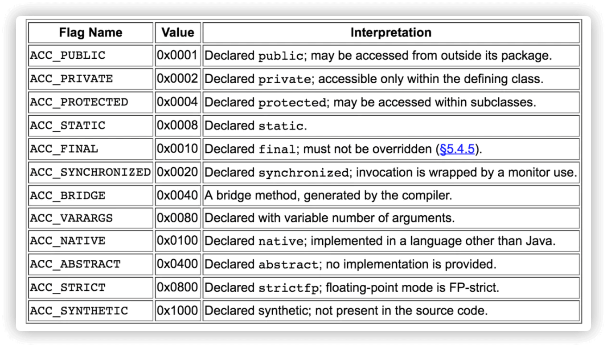

类文件结构详解
回顾一下字节码
在 Java 中，JVM 可以理解的代码就叫做 字节码（即扩展名为 .class 的文件），它不面向任何特定的处理器，只面向虚拟机。Java 语言通过字节码的方式，在一定程度上解决了传统解释型语言执行效率低的问题，同时又保留了解释型语言可移植的特点。所以 Java 程序运行时比较高效，而且，由于字节码并不针对一种特定的机器，因此，Java 程序无须重新编译便可在多种不同操作系统的计算机上运行。
Clojure（Lisp 语言的一种方言）、Groovy、Scala、JRuby、Kotlin 等语言都是运行在 Java 虚拟机之上。下图展示了不同的语言被不同的编译器编译成 .class 文件最终运行在 Java 虚拟机之上。.class 文件的二进制格式可以使用 WinHex 查看。

可以说 .class 文件是不同的语言在 Java 虚拟机之间的重要桥梁，同时也是支持 Java 跨平台很重要的一个原因。
Class 文件结构总结
根据 Java 虚拟机规范，Class 文件通过 ClassFile 定义，有点类似 C 语言的结构体。
ClassFile 的结构如下：
ClassFile {
u4 magic; //Class 文件的标志
u2 minor_version;//Class 的小版本号
u2 major_version;//Class 的大版本号
u2 constant_pool_count;//常量池的数量
cp_info constant_pool[constant_pool_count-1];//常量池
u2 access_flags;//Class 的访问标记
u2 this_class;//当前类
u2 super_class;//父类
u2 interfaces_count;//接口数量
u2 interfaces[interfaces_count];//一个类可以实现多个接口
u2 fields_count;//字段数量
field_info fields[fields_count];//一个类可以有多个字段
u2 methods_count;//方法数量
method_info methods[methods_count];//一个类可以有多个方法
u2 attributes_count;//此类的属性表中的属性数
attribute_info attributes[attributes_count];//属性表集合
}通过分析 ClassFile 的内容，我们便可以知道 class 文件的组成。

下面这张图是通过 IDEA 插件 jclasslib 查看的，你可以更直观看到 Class 文件结构。

使用 jclasslib 不光可以直观地查看某个类对应的字节码文件，还可以查看类的基本信息、常量池、接口、属性、函数等信息。
下面详细介绍一下 Class 文件结构涉及到的一些组件。
魔数（Magic Number）
u4 magic; //Class 文件的标志每个 Class 文件的头 4 个字节称为魔数（Magic Number）,它的唯一作用是确定这个文件是否为一个能被虚拟机接收的 Class 文件。Java 规范规定魔数为固定值：0xCAFEBABE。如果读取的文件不是以这个魔数开头，Java 虚拟机将拒绝加载它。
Class 文件版本号（Minor&Major Version）
u2 minor_version;//Class 的小版本号
u2 major_version;//Class 的大版本号紧接着魔数的四个字节存储的是 Class 文件的版本号：第 5 和第 6 个字节是次版本号，第 7 和第 8 个字节是主版本号。
每当 Java 发布大版本（比如 Java 8，Java9）的时候，主版本号都会加 1。你可以使用 javap -v 命令来快速查看 Class 文件的版本号信息。
高版本的 Java 虚拟机可以执行低版本编译器生成的 Class 文件，但是低版本的 Java 虚拟机不能执行高版本编译器生成的 Class 文件。所以，我们在实际开发的时候要确保开发的 JDK 版本和生产环境的 JDK 版本保持一致。
常量池（Constant Pool）
u2 constant_pool_count;//常量池的数量
cp_info constant_pool[constant_pool_count-1];//常量池紧接着主次版本号之后的是常量池，常量池的数量是 constant_pool_count-1（常量池计数器是从 1 开始计数的，将第 0 项常量空出来是有特殊考虑的，索引值为 0 代表“不引用任何一个常量池项”）。
常量池主要存放两大常量：字面量和符号引用。字面量比较接近于 Java 语言层面的常量概念，如文本字符串、声明为 final 的常量值等。而符号引用则属于编译原理方面的概念。包括下面三类常量：
- 类和接口的全限定名
- 字段的名称和描述符
- 方法的名称和描述符
常量池中每一项常量都是一个表。当前《Java 虚拟机规范》定义了 17 种常量池表，它们都有一个共同特点：开头是一个 u1 类型的 tag，用于标识当前常量的类型。
| 类型 | 标志（tag） | 描述 |
|---|---|---|
| CONSTANT_utf8_info | 1 | UTF-8 编码的字符串 |
| CONSTANT_Integer_info | 3 | 整形字面量 |
| CONSTANT_Float_info | 4 | 浮点型字面量 |
| CONSTANT_Long_info | 5 | 长整型字面量 |
| CONSTANT_Double_info | 6 | 双精度浮点型字面量 |
| CONSTANT_Class_info | 7 | 类或接口的符号引用 |
| CONSTANT_String_info | 8 | 字符串类型字面量 |
| CONSTANT_FieldRef_info | 9 | 字段的符号引用 |
| CONSTANT_MethodRef_info | 10 | 类中方法的符号引用 |
| CONSTANT_InterfaceMethodRef_info | 11 | 接口中方法的符号引用 |
| CONSTANT_NameAndType_info | 12 | 字段或方法的符号引用 |
| CONSTANT_MethodType_info | 16 | 标志方法类型 |
| CONSTANT_MethodHandle_info | 15 | 表示方法句柄 |
| CONSTANT_Dynamic_info | 17 | 表示动态计算常量 |
| CONSTANT_InvokeDynamic_info | 18 | 表示一个动态方法调用点 |
| CONSTANT_Module_info | 19 | 表示模块 |
| CONSTANT_Package_info | 20 | 表示模块中的包 |
.class 文件可以通过 javap -v class类名 指令来看一下其常量池中的信息(javap -v class类名-> temp.txt：将结果输出到 temp.txt 文件)。
访问标志(Access Flags)
u2 access_flags;//Class 的访问标记在常量池结束之后，紧接着的两个字节代表访问标志，这个标志用于识别一些类或者接口层次的访问信息，包括：这个 Class 是类还是接口，是否为 public 或者 abstract 类型，如果是类的话是否声明为 final 等等。
类访问和属性修饰符:

我们定义了一个 Employee 类
package top.snailclimb.bean;
public class Employee {
...
}通过 javap -v class类名 指令来看一下类的访问标志。

当前类（This Class）、父类（Super Class）、接口（Interfaces）索引集合
u2 this_class;//当前类
u2 super_class;//父类
u2 interfaces_count;//接口数量
u2 interfaces[interfaces_count];//一个类可以实现多个接口Java 类的继承关系由类索引、父类索引和接口索引集合三项确定。类索引、父类索引和接口索引集合按照顺序排在访问标志之后，
类索引用于确定这个类的全限定名，父类索引用于确定这个类的父类的全限定名，由于 Java 语言的单继承，所以父类索引只有一个，除了 java.lang.Object 之外，所有的 Java 类都有父类，因此除了 java.lang.Object 外，所有 Java 类的父类索引都不为 0。
接口索引集合用来描述这个类实现了哪些接口，这些被实现的接口将按 implements (如果这个类本身是接口的话则是 extends) 后的接口顺序从左到右排列在接口索引集合中。
字段表集合（Fields）
u2 fields_count;//字段数量
field_info fields[fields_count];//一个类会可以有个字段字段表（field info）用于描述接口或类中声明的变量。字段包括类级变量以及实例变量，但不包括在方法内部声明的局部变量。
field info（字段表） 的结构:

- access_flags: 字段的作用域（
public,private,protected修饰符），是实例变量还是类变量（static修饰符）,可否被序列化（transient 修饰符）,可变性（final）,可见性（volatile 修饰符，是否强制从主内存读写）。 - name_index: 对常量池的引用，表示的字段的名称；
- descriptor_index: 对常量池的引用，表示字段和方法的描述符；
- attributes_count: 一个字段还会拥有一些额外的属性，attributes_count 存放属性的个数；
- attributes[attributes_count]: 存放具体属性具体内容。
上述这些信息中，各个修饰符都是布尔值，要么有某个修饰符，要么没有，很适合使用标志位来表示。而字段叫什么名字、字段被定义为什么数据类型这些都是无法固定的，只能引用常量池中常量来描述。
字段的 access_flag 的取值:

方法表集合（Methods）
u2 methods_count;//方法数量
method_info methods[methods_count];//一个类可以有多个方法methods_count 表示方法的数量，而 method_info 表示方法表。
Class 文件存储格式中对方法的描述与对字段的描述几乎采用了完全一致的方式。方法表的结构如同字段表一样，依次包括了访问标志、名称索引、描述符索引、属性表集合几项。
method_info（方法表的） 结构:

方法表的 access_flag 取值：

注意：因为 volatile 修饰符和 transient 修饰符不可以修饰方法，所以方法表的访问标志中没有这两个对应的标志，但是增加了 synchronized、native、abstract 等关键字修饰方法，所以也就多了这些关键字对应的标志。
属性表集合（Attributes）
u2 attributes_count;//此类的属性表中的属性数
attribute_info attributes[attributes_count];//属性表集合在 Class 文件，字段表，方法表中都可以携带自己的属性表集合，以用于描述某些场景专有的信息。与 Class 文件中其它的数据项目要求的顺序、长度和内容不同，属性表集合的限制稍微宽松一些，不再要求各个属性表具有严格的顺序，并且只要不与已有的属性名重复，任何人实现的编译器都可以向属性表中写 入自己定义的属性信息，Java 虚拟机运行时会忽略掉它不认识的属性。
参考
- 《实战 Java 虚拟机》
- Chapter 4. The class File Format - Java Virtual Machine Specification: https://docs.oracle.com/javase/specs/jvms/se8/html/jvms-4.html
- 实例分析 JAVA CLASS 的文件结构：https://coolshell.cn/articles/9229.html
- 《Java 虚拟机原理图解》 1.2.2、Class 文件中的常量池详解（上）：https://blog.csdn.net/luanlouis/article/details/39960815
写在最后
如果内容对你有帮助的话，欢迎顺手给 JavaGuide 点一个免费的 Star 支持一下：GitHub | Gitee。
JavaGuide 已持续维护近七年，累计 6100+ 次提交，来自 620+ 位贡献者共同完善。你的 Star、反馈和 PR，都是这个项目继续更新的动力。
如果你正在准备后端/AI 应用开发面试，也可以了解一下我的知识星球，里面包括后端和 AI 实战项目、简历优化、一对一提问和高频考点资料，已经持续维护六年。